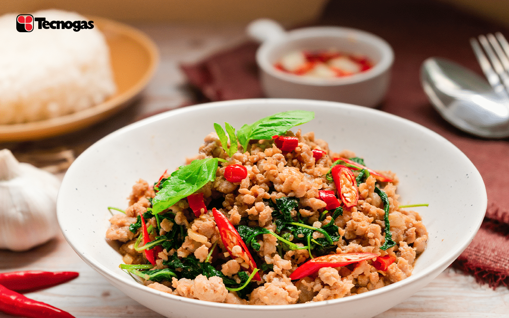

ข้าวผัดกระเพรา

วัตถุดิบทำผัดกระเพรา
-
หมูสับ 500 กรัม (มีแบ่งส่วนหนึ่งทำเป็นกับข้าวด้วยนะคะ
ไม่ได้ใช้ทำข้าวผัดกะเพราทั้งหมด)
- กะเพรา ปริมาณตามชอบ
- พริกแห้ง 100 กรัม
- กระเทียม 100 กรัม
- ซอสหอยนางรม 2 ช้อนโต๊ะ
- ซีอิ้วขาว 1 ช้อนโต๊ะ
- ซีอิ้วดำ ½ ช้อนโต๊ะ
วิธีทำข้าวผัดกะเพรา
- นำพริกแห้งกับกระเทียมตำ ๆ เตรียมไว้ ตั้งกระทะใส่น้ำมัน ใครจะกินกับไข่ดาว
ใช้น้ำมันทอดไข่ดาวแบบที่ชอบก่อนเลยค่ะ จากนั้นนำพริกกระเทียมมาผัดให้หอมฉุน
จากนั้นใส่หมูสับลงไปเลยค่า
- เมื่อหมูสับเริ่มสุก ใส่ซอสปรุงรสต่าง ๆ ลงไปค่ะ
ใช้น้ำประมาณหนึ่งทัพพีกลั้วครก
เราจะใช้น้ำล้างพริกกับกระเทียมที่ติดครกอยู่มาใส่ในกระทะค่ะ
จากนั้นแต่งสีด้วยซีอิ้วดำ ผัด ๆ ๆ แล้วใส่ใบกะเพราลงไป
ใส่แล้วปิดไฟเลยค่ะผัดแค่พอผักสลด จากนั้นตักออกจากกระทะ
แบ่งไว้ในกระทะส่วนหนึ่งแล้วนำข้าวเปล่าลงไปผัดคลุดกเคล้าให้เข้ากัน
ค่าโภชนาการของอาหาร
| คุณค่าทางโภชนาการต่อหนึ่งหน่วยบริโภค |
| พลังงานทั้งหมด 231 |
| พลังงานจากไขมัน 57.6 |
| ไขมันทั้งหมด |
6.4 g |
10% |
| คลอเรสเตอรอล |
94 mg |
32% |
| โซเดียม |
852.5 mg |
36% |
| โพแทสเซียม |
567.4 mg |
17% |
| คาร์โบไฮเดรตทั้งหมด |
8.9g |
3% |
| โปรตีน |
32.2g |
65% |